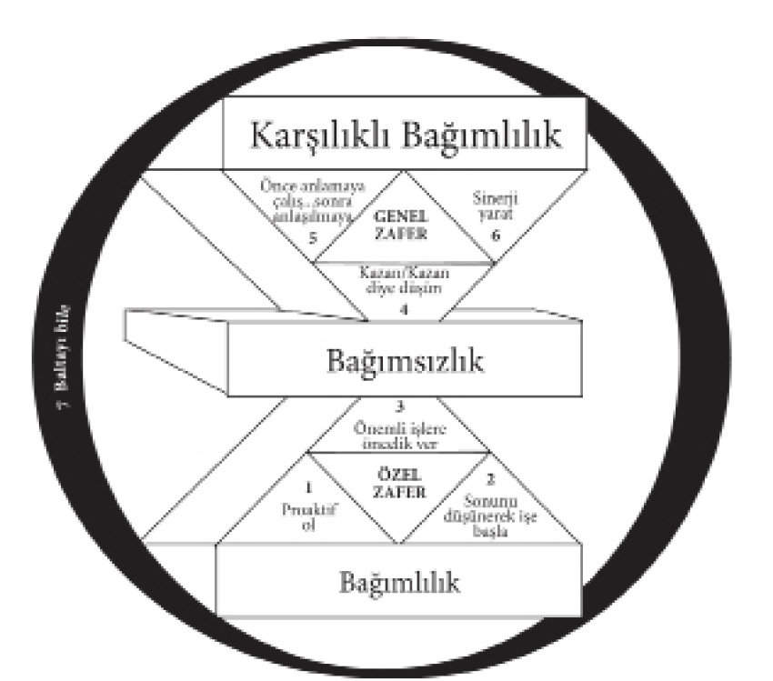
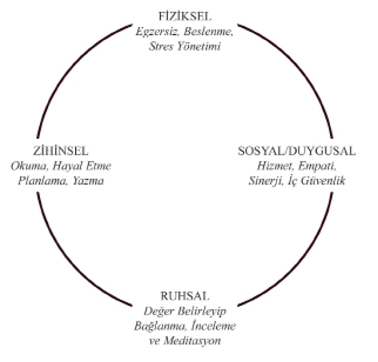
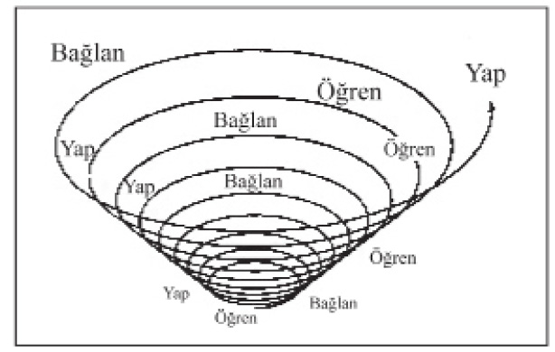

Dördüncü Bölüm - YENİLEME

7. ALIŞKANLIK BALTAYI BİLE - KENDİNİ DENGELİ BİR BİÇİMDE YENİLEME İLKELERİ
Bazen küçük şeylerden
ne müthiş sonuçlar alındığını gördükçe...
İçimden, küçük şeyler olmadığını
düşünmek geliyor.
BRUCE BARTON
D iyelim ki koruda bir ağacı telaşla kesmeye çalışan biriyle karşılaşıyorsunuz.
“Ne yapıyorsun?” diye soruyorsunuz.
Adam sabırsızca, “Görmüyor musun?” diye yanıtlıyor. “Ağacı baltayla kesmeye çalışıyorum!”
“Bitkin görünüyorsun!” diye bağırıyorsunuz. “Bu işi ne zamandan beri yapıyorsun?”
Adam, “Beş saatten fazla oldu,” diyor. “Çok yoruldum! Zor iş bu.”
“İşe birkaç dakika ara verip baltayı bilesene!” diyorsunuz. “O zaman ağacı daha hızlı keseceğinden eminim.”
Adam sözcüklerin üstüne basa basa: “Baltayı bileyecek zamanım yok,” diyor. “Ağacı kesmekle meşgulüm!”
Yedinci Alışkanlık, baltayı bilemeye zaman ayırmaktır. Yedi Alışkanlık paradigmasındaki diğer alışkanlıkları çember içine alır, çünkü bu, ötekilerin tümünü mümkün kılan alışkanlıktır.
YENİLEMENİN DÖRT BOYUTU
Yedinci Alışkanlık, kişisel ÜY’dir. Sahip olduğunuz en büyük kaynağı –kendinizi– korumak ve geliştirmektir. Doğanızın dört boyutunu –fiziksel, ruhsal, zihinsel ve sosyal/duygusal– yenilemektir.

Kullanılan sözcükler farklı olsa da, çoğu yaşam felsefesi açıkça ya da üstü örtülü olarak bu dört boyutla ilgilenir. Felsefeci Herb Shepherd, sağlıklı bir biçimde dengelenmiş yaşamı dört değer çerçevesinde betimler: Bakış açısı (ruhsal), özerklik (zihinsel), bağlılık (sosyal) ve nitelik (fiziksel). Günümüzün koşucu gurularından George Sheehan dört rolü şöyle tanımlar: İyi bir hayvan olmak (fiziksel), iyi bir zanaatkâr olmak (zihinsel), iyi bir dost olmak (sosyal) ve bir aziz olmak (ruhsal). Sağlam motivasyon ve organizasyon kuramı, şu dört boyutu ya da motivasyonu kapsar: Ekonomik (fiziksel), insanlara nasıl davranıldığı (sosyal), insanların nasıl geliştirildiği ve kullanıldığı (zihinsel) ve kurumun verdiği hizmet, iş ve yaptığı katkı (ruhsal).
“Baltayı bilemek”, temelde bu dört motivasyonun hepsini birden ifade etmek demektir. Doğamızın dört boyutunu da akıllıca ve dengeli biçimlerde düzenli ve tutarlı olarak kullanmamız anlamına gelir.
Bunu yapmak için proaktif olmamız gerekir. Baltayı bilemeye zaman ayırmak, kesinlikle bir II. Kare etkinliğidir ve II. Kare’de harekete geçilmelidir. I. Kare acil olduğu için üzerimizde etkindir, bize durmadan baskı yapar. Kişisel Ü/Y’ye, ikinci doğamız haline gelip sağlıklı bir alışkanlık oluncaya kadar baskı yapmamız gerekir. Etki Alanımızın merkezinde olduğu için de, bu işi bizim yerimize kimse yapamaz. Bunu kendimiz yapmak zorundayız.
Bu, yaşam boyu yapabileceğimiz en önemli yatırımdır; yaşamla başa çıkmak ve katkıda bulunmak için elimizdeki tek araç olan kendimize yaptığımız yatırımdır. Biz, kendi çalışmalarımızın aracıyız ve etkili olmak için de, baltayı bu dört biçimde bilemeye düzenli olarak zaman ayırmanın önemini kabul etmeliyiz.
Fiziksel Boyut
Fiziksel boyut, fiziksel bedenimizin etkili bir biçimde bakımıyla ilgilidir; doğru besin almak, yeteri kadar dinlenip gevşemek ve düzenli olarak egzersiz yapmak.
Egzersiz, II. Kare’nin güçlendirici etkinliklerinden biridir. Çoğumuz bunu, acil olmadığı için düzenli yapmayız ve yapmadığımız için de er ya da geç kendimizi I. Kare’de, ihmalimizin doğal sonucu olan sağlık sorunları ve krizlerle uğraşırken buluruz.
Çoğumuz egzersiz yapmak için yeterli zamanımız olmadığını düşünürüz. Ne kadar çarpıtılmış bir paradigma! Aslında bunu yapmayacak kadar zamanımız yoktur. Burada haftada üç-altı saat arası, ya da iki günde bir en az otuz dakikalık bir egzersizden söz ediyoruz. Haftanın geri kalan 162-165 saati üzerinde yapacağı etkinin inanılmaz yararlarını düşünürsek, bu süre hiç de fazla değildir.
Bunu yapmak için özel bir donanıma da gerek yoktur. Aletli jimnastik ya da tenis gibi biraz ustalık isteyen bir spor yapmak için bir korta ya da spor salonuna gitmek istiyorsanız, bu da ek bir fırsattır. Ama baltayı bilemek için şart değildir.
İyi bir çalışma programı, kendi evinizde uygulayabileceğiniz ve vücudunuza üç bakımdan yararlı olacak bir programdır: Dayanıklılık, esneklik ve güç.
Dayanıklılık, aerobik çalışmaları, kalp ve damar sisteminin verimliliği, yani kalbinizin bütün vücudunuza kan pompalama yeteneğiyle sağlanır.
Kalp bir kas olsa da, doğrudan çalıştırılamaz. Kalbe ancak geniş kas grupları, özellikle de bacak kasları yoluyla egzersiz yaptırılabilir. Hızlı yürüme, koşma, bisiklet, yüzme, kayak ve jogging egzersizlerinin yararlı olmasının nedeni de budur.
Kalp atışlarını dakikada en az yüze çıkarıp bunu otuz dakika sürdürebilirsiniz, formunuzu asgari düzeyde korumuş sayılırsınız.
İdeal olanı, kalp atışlarınızı azami nabzınızın yüzde altmışına kadar yükseltmeye çalışmanızdır. Bu, kalbinizin vücudunuza kan pompalamayı sürdürebileceği en yüksek hızdır. Genellikle azami kalp atışınız, yaşınızın 220’den çıkarılmasıyla bulunur. Örneğin, 40 yaşındaysanız, egzersiz yaparken kalp atışlarınızın dakikada 108 olmasını hedeflemeniz gerekir (220 - 40 = 180 x 0.6 = 108) “Antrenman etkisi”nin genellikle kişisel azami hızınızın yüzde 72’si ile 87’si arasında olduğu düşünülür.
Esneklik, gerinmeyle elde edilir. Uzmanların çoğu aerobik öncesinde ısınma, sonrasında da soğuma amaçlı gerinme hareketlerini önerirler. Öncesinde, daha yorucu çalışmalar için kaslar gevşetilip ısıtılır. Sonrasında ise, her tarafınızın tutulmasını engellemek için, biriken laktik asit dağıtılır.
Güç, kas direnç egzersizleriyle sağlanır. Basit jimnastik hareketleri, mekikler, barfiks ve ağırlıkla çalışmak gibi. Güç geliştirmeye vereceğiniz ağırlık, durumunuza bağlıdır. Ağır işte çalışıyor ya da spor etkinlikleriyle uğraşıyorsanız, artan gücünüz ustalaşmanızı sağlar. Genelde masa başında çalışıyorsanız ve yaşam tarzınız için fazla güç gerekmiyorsa, o zaman aerobik ve gerinme alıştırmalarına biraz kas çalıştırıcı hareketler eklemeniz yeterli olur.
Bir keresinde egzersiz fizyolojisi dalında doktora yapmış bir arkadaşımla bir spor salonuna gitmiştim. O, dikkatini gücünü artırmaya vermişti. Ağırlık kaldırırken kendisini izlememi istedi. Zamanı gelince benden ağırlığı almamı isteyecekti. Bana kesin bir tavırla, “Sakın ben söylemeden el atma,” diye tembih etti.
Onu izledim, bekledim ve ağırlığı almaya hazırlandım. Ağırlık bir iniyor, bir çıkıyordu ve bu işin gitgide zorlaştığını görüyordum. Ama o devam ediyordu. Ağırlığı yukarı itmeye başlarken, “Bu kez başarılı olması olanaksız,” diye düşünüyordum. Ama yine de kaldırıyordu. Sonra yavaşça aşağı indiriyor ve yeniden başlıyordu. Yukarı aşağı, yukarı aşağı.
Sonunda, gösterdiği çabayla gerilmiş yüz kaslarına ve derisinin altından fırlayacak gibi görünen damarlarına bakarak, “Göğsüne düşüp onu ezecek. Belki de ağırlığı almam daha doğru olur. Belki kontrolünü kaybetti ve ne yaptığını bilmiyor,” diye düşündüm. Ama ağırlığı indirdi. Sonra tekrar başladı. Gözlerime inanamıyordum.
Sonunda bana ağırlığı almamı söylediği zaman, “Neden bu kadar uzun süre bekledin?” diye sordum.
“Çalışmanın neredeyse bütün yararı en sonda görülür, Stephen,” diye yanıtladı. “Ben gücümü artırmaya çalışıyorum ve bu ancak, kas lifi çatlayıp, sinir lifi can acısını kaydedince olur. Doğa bu durumu fazlasıyla telafi eder ve 48 saat içerisinde lif daha da güçlenir.”
Onun ne demek istediğini anlayabiliyordum. Duygusal kaslarda da aynı ilke geçerlidir; sabır gibi. Sabrınızın sınırını daha önce dayandığı noktayı aşıncaya kadar zorlarsanız, duygusal lif kopar. Doğa, bunu fazlasıyla telafi eder ve lif bir dahaki sefere daha da güçlü olur.
Arkadaşım kaslarını güçlendirmek istiyordu. Bunu nasıl yapacağını da biliyordu. Ama hepimizin etkili olmak için bu tür bir güç geliştirmesine gerek yoktur. “Acı yoksa, kazanç da yoktur” sözü bazı durumlarda geçerlidir, ama etkili bir egzersiz programının özü değildir.
Fiziksel boyutu yenilemenin özü baltayı bilemek; çalışma, uyum sağlama ve zevk alma kapasitemizi koruyup artıracak şekilde vücudumuzu düzenli olarak çalıştırmaktır.
Bir egzersiz programı hazırlarken akıllıca davranmamız da gerekir. Özellikle hiç bu tür çalışma yapmamış olanlarda, abartıya kaçma eğilimi vardır. Bu ise gereksiz acılara, incinmelere, hatta kalıcı hasara yol açabilir. En iyisi yavaş yavaş başlamaktır. Egzersiz programının, son araştırma bulguları, doktorunuzun tavsiyeleri ve vücudunuz hakkında kendi bildiklerinizle uyumlu olması gerekir.
Hiç egzersiz yapmadıysanız, vücudunuz rahatça yokuş aşağı giderken bu değişikliğe hiç kuşkusuz karşı koyacaktır. İlk başlarda bundan hoşlanmayacaksınız. Hatta belki de nefret edeceksiniz. Ama proaktif olun. Her şeye rağmen bunu yapın. Koşu yapmaya karar verdiğiniz sabah yağmur yağsa bile, yine de koşun. “Harika! Yağmur yağıyor! Yalnız vücudumu değil, irademi de geliştireceğim!”
Anlık bir çözüm değildir bu. Uzun vadede olağanüstü sonuçlar getirecek bir II. Kare etkinliğidir. Sürekli egzersiz yapan birine sorun. Yavaş yavaş kalbiniz ve solunum sisteminiz daha verimli çalışmaya başlarken, dinlenme sırasındaki kalp atışlarınız ağırlaşacak. Vücudunuzun daha zorlayıcı şeyler yapma yeteneğini artırırken, normal etkinlikler size daha rahat ve hoş gelecek. Öğleden sonra daha fazla enerjiniz olacak. Eskiden egzersiz yapmanızı engelleyen o “aşırı yorgunluk”, yerini yaptığınız her şeye canlılık veren bir enerjiye bırakacak.
Belki de en büyük yararı, 1. Alışkanlık’taki proaktivite kaslarınızın gelişmesi olacak. Sizi egzersiz yapmaktan alıkoyan bütün güçlere tepki göstermek yerine, fiziksel sağlığın değerine dayalı olarak hareket ederken, kendinizle ilgili paradigmanız, kendinize verdiğiniz değer, özgüveniniz ve kişisel bütünlüğünüz kökünden etkilenecek.
Ruhsal Boyut
Ruhsal boyutun yenilenmesi yaşamınızda liderliği sağlar. Bu, 2. Alışkanlık’la yakından ilişkilidir.
Ruhsal boyut sizin özünüz, merkeziniz, değer sisteminize olan bağlılığınızdır. Hayatın çok özel, son derecede önemli bir alanıdır. Size ilham veren, yücelten, sizi tüm insanlığın kalıcı hakikatlerine bağlayan kaynaklardan yararlanır. İnsanlar bunu çok farklı biçimlerde yaparlar.
Ben, yenilenmeyi her gün kutsal metinler okuyarak meditasyon yapmakta bulurum, çünkü bunlar değer sistemimi temsil eder. Okuyup tefekküre dalarken yenilendiğimi, güçlendiğimi, merkezime odaklandığımı ve kendimi yeni hizmetlere adadığımı hissederim.
Büyük edebiyat yapıtlarına ya da müziğe dalmak, bazı kişilerde buna benzer bir ruh yenilenmesine yol açar. Bazıları ise bunu doğayla iletişim kurmakta bulur. Doğa, kendisini ona bırakan kişileri kutsar. Kentin gürültüsünden ve uyumsuzluğundan ayrılarak kendinizi doğanın uyum ve akışına bırakabildiğinizde, yenilenmiş olarak geri dönersiniz. Bir süre hiçbir şey sizi rahatsız etmez ve sarsmaz. Ama sonra dışarıdaki gürültü ve uyumsuzluk, yavaş yavaş iç huzurunuzu yeniden bozmaya başlar.
Arthur Gordon, “The Turn of the Tide” (Gel-git Dönümü) adlı kısa ve özel öyküsünde kendi ruhsal yenilenmesini bizimle paylaşarak, hayatının bir döneminde her şeyin ona nasıl bayat ve tatsız geldiğini anlatıyor. Hevesi sönmüş, yazma çabaları meyve vermez olmuştur. Durum her gün biraz daha kötüye gitmektedir.
Sonunda, bir doktordan yardım istemeye karar verir. Fiziksel bir sorun olmadığını gören doktor, ona talimatlarına bir gün boyunca uyup uyamayacağını sorar.
Gordon bunu yapabileceğini belirtince, doktor ertesi günü çocukken en mutlu olduğu yerde geçirmesini söyler. Yanına yiyecek alabilecek, ama kimseyle konuşmayacak, okumayacak, yazmayacak ya da radyo dinlemeyecektir. Sonra dört reçete yazar. Gordon’a bunları sırayla saat dokuz, on iki, on beş ve on sekizde açmasını söyler.
“Ciddi misiniz?” diye sorar Gordon.
“Faturamı aldığınız zaman şaka etmediğimi anlarsınız,” diye yanıtlar doktor.
Böylece ertesi sabah, Gordon kumsala gider. İlk reçeteyi açar ve okur: “Dikkatle dinle.” Doktorun deli olduğunu düşünür. Üç saat dinlemek mi? Ama doktorun talimatına uymayı kabul ettiği için dinler. Denizden ve kuşlardan gelen alışıldık sesleri duyar. Bir süre sonra, başlangıçta o kadar belirgin olmayan diğer sesleri de işitebilir. Dinlerken, denizin ona çocukken verdiği dersleri düşünmeye başlar; sabır, saygı, her şeyin karşılıklı bağımlılığı. Sesleri –ve sessizliği– dinlemeye ve gitgide artan bir huzur duymaya başlar.
Öğle vakti ikinci reçeteyi açıp okur:“Geriye doğru uzanmaya çalış.” “Neye uzanmak?” diye merak eder. Belki de çocukluğuna, belki de daha mutlu günlerin anılarına. Geçmişini, keyif dolu küçük anları düşünür. Onları tam olarak anımsamaya çalışır. Anımsarken de, içinde gitgide artan bir sıcaklık hisseder.
Saat üçte, üçüncü kâğıt parçasını açar. Şimdiye dek, reçetelere uyması kolay olmuştur. Ama bu seferki farklıdır: “Dürtülerini incele.” İlk önce kendini savunmaya çalışır. İstediği şeyleri düşünür –başarı, şöhret, güvenlik– ve hepsine bir gerekçe bulur. Ama sonra bu dürtülerin yeterince iyi olmadığını, belki de durağan durumuna yanıtı burada bulacağını düşünür.
Dürtülerini derinlemesine gözden geçirir. Geçmişteki mutluluğunu düşünür ve sonunda yanıtı bulur.
Öyküsünde aynen şöyle diyor: “Kişinin dürtüleri yanlışsa, hiçbir şeyin doğru olamayacağını bir anda anladım. İster postacı, berber, sigortacı veya ev kadını olun, ister başka bir şeyle uğraşın, durum değişmez. Başkalarına hizmet ettiğinizi hissettiğiniz sürece işinizi iyi yaparsınız. Kendiniz dışında hiç kimseye yararlı olmuyorsanız, o kadar iyi yapamazsınız. Bu, yerçekimi kadar kaçınılmaz bir kuraldır.”
Saat altı olduğunda, son talimatı yerine getirmesi uzun sürmez. “Endişelerini kuma yaz.” Gordon yere diz çöküp kırık bir midye kabuğuyla birkaç sözcük yazar. Sonra dönüp uzaklaşır. Arkasına bakmaz; kabaran suların her yeri kaplayacağını bilmektedir.
Ruhsal yenilenme zaman ister. Ama bir II. Kare etkinliğidir. Bu nedenle onu ihmal edecek kadar zamanımız yoktur.
Büyük reformcu Martin Luther şöyle der: “Bugün yapmam gereken o kadar çok şey var ki, dizlerimin üstünde bir saat daha geçirmem gerekiyor.” Onun için dua etmek mekanik bir görev değil, enerjilerini açığa çıkarıp çoğaltacak bir güç kaynağıydı.
Bir zamanlar birisi, ne tür baskılarla karşılaşırsa karşılaşsın her zaman müthiş bir esenlik ve huzur içinde olan Uzakdoğulu bir Zen ustasına, “Bu esenlik ve huzuru nasıl sürdürebiliyorsunuz?” diye sormuş. Usta, “Meditasyon yaptığım yerden hiçbir zaman ayrılmayarak,” diye yanıtlamış. Sabahları erkenden meditasyon yapıyor ve o anların huzurunu gün boyu kalbinde ve zihninde taşıyormuş.
Fikir şudur: Yaşamımızın liderlik merkezinden güç almaya zaman ayırdığımızda, ki yaşam da sonuçta bundan ibarettir, bir şemsiye gibi her şeyin üzerine yayılır. Bizi yeniler, tazeler; özellikle de ona yeniden bağlanırsak.
Kişisel bir misyon bildirgesinin çok önemli olduğuna inanmamın nedeni de budur. Merkezimizi ve amacımızı derinlemesine anlarsak, onu sık sık gözden geçirebilir ve misyonumuza yeniden bağlanabiliriz. Her gün ruhumuzu yenilerken, günün olaylarını o değerlerle uyumlu olacak biçimde gözümüzün önünde canlandırır ve “yaşarız”.
Ruhani lider David O.McKay’e göre, “Hayatın en büyük savaşları her gün ruhun sessiz odasında geçer.” Oradaki çarpışmaları kazanırsanız, içeride çatışan meseleleri hallederseniz, amacınızın ne olduğunu bilmekten gelen bir huzur duyarsınız. İşbirliği anlayışıyla başkalarının iyilik ve refah düzeyini yükseltmeyi düşünerek diğer insanların başarılarına içtenlikle sevindiğiniz zaman, Genel Zaferlerin bunu doğal bir biçimde izlediğini görürsünüz.
Zihinsel Boyut
Zihinsel gelişimimizle çalışma disiplinimizin büyük bir bölümünü formel eğitim sağlar. Ama okulun dış disiplininden kurtulur kurtulmaz, çoğumuz zihnimizin körelmesine izin veririz. Artık ciddi kitapları okumaz, etkinlik alanımız dışındaki yeni konuları derinlemesine incelemeyiz. Analitik düşünmeyiz, yazmayız; en azından eleştirel bir biçimde ya da kendimizi açık, damıtılmış, kısa ve öz bir dille ifade etme yeteneğimizi sınayacak şekilde yazmayız. Onun yerine, zamanımızı televizyon seyrederek geçiririz.
Sürekli yapılan araştırmalar evlerin çoğunda televizyonun haftada otuz beş ile kırk beş saat arası açık olduğunu gösteriyor. Bu, pek çok kişinin iş yerinde çalışırken geçirdiği zamana eşit ve çocukların okulda geçirdikleri süreden uzundur. Televizyon, en güçlü sosyalleştirme aracı olduğundan, seyrederken onun aracılığıyla öğretilen bütün o değerlere maruz kalırız. Bu da bizi hiç farkına varmadan güçlü bir biçimde etkileyebilir.
Televizyon seyrederken sağduyulu davranmak için 3. Alışkanlığın etkili özyönetimi gereklidir. Bu, amacınıza ve değerlerinize en iyi hizmeti ve ifadeyi verecek olan bilgilendirici, esinleyici ve eğlendirici programları seçmenizi sağlar.
Bizim ailemizde televizyon seyretmek, günde ortalama bir saatten, haftada yedi saatle sınırlıdır. Bir aile toplantısı yaparak bu konudan söz ettik ve evlerde televizyon yüzünden neler olduğunu açıklayan verileri inceledik. Kimsenin kendini savunmaya ya da itiraza kalkışmadığı bir zamanda bunu ailece tartıştığımız için de, pembe dizi bağımlılığının ya da belirli bir programı sürekli seyretmenin bir tür hastalık olduğunu herkesin anlamaya başladığını gördük.
Televizyona, kaliteli eğitim ve eğlence programlarına minnet duyuyorum. Bu tür programlar hayatımızı zenginleştirebilir, hedeflerimizle amaçlarımıza anlamlı katkılarda bulunabilir. Ama zamanımızı ve zihnimizi boşa harcatmaktan başka bir şey yapmayan, izin verirsek bizi olumsuz etkileyen pek çok program da var. Beden gibi, televizyon da iyi bir hizmetkâr, ama kötü bir efendidir. 3. Alışkanlığı uygulayıp, misyonumuzu yerine getirmemizi sağlayacak kaynakları azami ölçüde kullanabilmek için kendimizi etkili bir biçimde yönetmemiz gerekir.
Eğitim –zihni sürekli olarak bileyen ve genişleten sürekli eğitim– zihnin yenilenmesi bakımından çok önemlidir. Bazen bu, okulun ya da sistemli çalışma programlarının dış disiplinini içerir. Ama çoğu zaman buna gerek yoktur. Proaktif insanlar kendilerini eğitmek için pek çok yol bulabilirler.
Zihni bir kenara çekilip kendi programını inceleyeceği şekilde eğitmek son derecede yararlıdır. Benim için liberal eğitimin tanımıdır bu: yaşamın programlarını, daha büyük sorular, amaçlar ve diğer paradigmalarla karşılaştırarak inceleme yeteneği. Bu tür eğitim olmadan yapılacak bir egzersiz, zihni daraltır ve kapatır; böylece o egzersizin altında yatan varsayımlar hiçbir zaman incelenmez. İşte bu nedenle, çok okuyup kendini büyük zihinlere açmanın paha biçilmez bir değeri vardır.
Zihni düzenli olarak bilgilendirip genişletmenin, iyi metinler okuma alışkanlığını edinmekten daha iyi bir yolu yoktur. Bu da güçlendirici bir II. Kare etkinliğidir. Bu sayede dünyadaki gelmiş geçmiş ya da şu anda var olan en iyi zihinlerin içine girebilirsiniz. İşe ayda bir kitap okumayı hedef alarak başlamanızı, sonra bunu iki haftada bir kitaba, sonra da haftada bir kitaba çıkarmanızı öneririm. “Okumayan kişi, okumayı bilmeyenden daha iyi durumda değildir.”
Büyük yapıtlar, klasikler, otobiyografiler, National Geographic gibi kültürel bilincimizi artıran süreli yayınlar, çeşitli alanlardaki güncel metinler, paradigmalarımızı genişletir ve zihnimizdeki baltayı biler; özellikle de, okuyup önce anlamaya çalışırken 5. Alışkanlığı uyguladığımız takdirde. Bir yazarın ne demek istediğini iyice anlamadan erken yargılara varmak için kendi otobiyografimizi kullanırsak, okuma deneyiminin yararlarını sınırlamış oluruz.
Zihinsel baltayı bilemenin bir diğer güçlü yolu da yazmaktır. Düşüncelerimizi, deneyimlerimizi, içgörülerimizi ve öğrendiklerimizi kaydettiğimiz bir günlük, zihnin berraklığını, keskinliğini artırır ve bağlamı genişletir. Güzel mektuplar yazmak, olayların yüzeysel, sığ düzeyinde değil de, duygu ve düşüncelerin daha derinlerdeki düzeyinde iletişim kurmak, iyi düşünme, doğru akıl yürütme ve etkili bir biçimde anlaşılmayı sağlama yeteneğimizi de etkiler.
Düzenleme ve planlama, zihinsel yenilenmenin 2. ve 3. Alışkanlıklarla bağlantılı diğer yollarıdır. Sonunu düşünerek işe başlamak ve bu sona ulaşmak için zihnine çekidüzen verebilmektir. Sonu daha en başından görmek, bütün yolculuğu adımlar açısından değilse de, en azından ilkeler açısından anlamak için, zihninizin göz önünde canlandırma, hayal etme gücünü kullanmaktır.
Savaşların, generalin çadırında kazanıldığı söylenir. Baltayı ilk üç boyutta –fiziksel, ruhsal ve zihinsel– bilemeyi, “Günlük Özel Zafer” olarak tanımlıyorum. Sizi de bu basit alıştırmayı her gün bir saat yapmaya davet ediyorum. Yaşamınızın sonuna kadar günde bir saat yapın bunu.
Değer ve sonuçlar açısından, Günlük Özel Zafer’le kıyaslanabilecek bir saatlik hiçbir uğraş yoktur. Bu her kararı, her ilişkiyi etkileyecektir. Günün diğer saatlerinin niteliğini ve etkililiğini, hatta uykunuzun derinliğini ve rahatlığını da büyük ölçüde artıracaktır. Yaşamın zor sorunlarıyla başa çıkabilmeniz için uzun süreli fiziksel, ruhsal ve zihinsel güç sağlayacaktır.
Phillips Brooks’un sözleriyle:
“İlerideki yıllarda bir gün, büyük bir baştan çıkarıcıyla boğuşacak ya da hayatınızın büyük kederiyle sarsılacaksınız. Ama gerçek mücadele şimdi, burada veriliyor... O müthiş keder ya da baştan çıkarıcıyla karşılaştığınız gün sefil bir mağlup mu, yoksa şanlı şerefli bir galip mi olacağınız şimdi kararlaştırılıyor. Karakter ancak, istikrarlı ve uzun bir süreç sonucunda oluşturulabilir.”
Sosyal/Duygusal Boyut
Fiziksel, ruhsal ve zihinsel boyutlar, merkezlerinde kişisel vizyon, liderlik ve yöneticilik ilkeleri olan 1., 2. ve 3. Alışkanlıklarla yakından ilişkilidir. Sosyal/duygusal boyutun odak noktası ise, merkezinde kişiler arası liderlik, empatik iletişim ve yaratıcı işbirliği olan 4., 5. ve 6. Alışkanlıklardır.
Hayatımızın sosyal ve duygusal boyutları birbirine bağlıdır, çünkü duygusal yaşamımızın tek değilse de başlıca kaynağı, başkalarıyla olan ilişkilerimizdir.
Sosyal/Duygusal boyutun yenilenmesi, diğer boyutları yenilemenin gerektirdiği kadar zaman almaz. Bu yenilemeyi, başka insanlarla gündelik normal etkileşimlerimiz sırasında yapabiliriz. Ama kesinlikle egzersiz gerektirir. Birçoğumuz Özel Zafer düzeyine ulaşmadığı ve 4., 5. ve 6. Alışkanlık için gerekli olan Genel Zafer becerilerini bütün etkileşimlerde doğal olarak kullanacak kadar edinmediği için, kendimizi zorlamak durumunda kalabiliriz.
Diyelim ki siz, hayatımdaki çok önemli kişilerden birisiniz. Patronum, yardımcım, iş arkadaşım, dostum, komşum, eşim, çocuğum, akrabam –etkileşmek istediğim ya da gereksinim duyduğum biri– olabilirsiniz. Diyelim ki, iletişim kurmak, birlikte çalışmak, yaşamsal bir sorunu görüşmek, bir amaca erişmek ya da bir sorunu çözmek istiyoruz. Ama her şeyi farklı görüyoruz. Farklı gözlüklerle bakıyoruz. Siz genç hanımı görüyorsunuz, bense yaşlı olanı.
Bu nedenle 4. Alışkanlığı uygulayarak size gelip şöyle derim: “Olaya farklı biçimlerde yaklaştığımızı görüyorum. İkimizi de hoşnut edecek bir çözüm buluncaya kadar iletişim kurma fikrine ne dersin? Bunu yapmaya razı mısın?” Birçok kişi bu öneriyi kabul eder.
Sonra 5. Alışkanlığa geçerim. “İzin ver de önce seni dinleyeyim.” Yanıtlamak niyetiyle değil, paradigmanızı iyice, derinlemesine anlayabilmek için empatiyle dinlerim. Görüşünüzü sizin kadar iyi açıklayabildiğim zaman, sizin de benimkini anlayabilmeniz için dikkatimi kendi görüşümü iletmeye veririm.
İkimizi de memnun edecek bir çözüm arama ve birbirimizin görüşünü derinlemesine anlama vaadimize bağlı kalarak, 6. Alışkanlığa geçeriz. Anlaşmazlıklarımıza, başlangıçta ikimizin de önerdiğinden daha iyi olacağını bildiğimiz üçüncü alternatif çözümleri üretmek için birlikte çalışırız.
4., 5. ve 6. Alışkanlıklar’da başarı, öncelikle düşünceye değil, duyguya dayalıdır. Kişisel güvenlik duygumuzla sıkı sıkıya bağlantılıdır.
Kişisel güvenliğimizin kaynağı kendi içimizdeyse, Genel Zafer alışkanlıklarını uygulayacak gücümüz var demektir. Düşünsel açıdan oldukça ileri düzeyde olmamıza rağmen duygusal güvenlikten yoksunsak, yaşamsal konularda farklı düşünen kişilerle 4., 5. ve 6. Alışkanlıkları uygulamamız çok tehlikeli olabilir.
Güvenlik duygusu nereden gelir? Başkalarının hakkımızda ne düşündüklerine ya da bize nasıl davrandıklarına bağlı değildir. Bize verilmiş olan senaryolarla, durumumuz ya da konumumuzla da ilgisi yoktur.
İçimizden gelir. Kendi zihnimizin ve yüreğimizin derinliklerindeki isabetli paradigmalara ve doğru ilkelere, içimizle dışımızın uyum halinde olmasına bağlıdır. Günlük alışkanlıklarımızın en derin değerlerimizi yansıttığı bütünlüklü bir yaşam sürmekten gelir.
Bence dürüst bir yaşam, kişisel değerin en temel kaynağıdır. Özgüvenin öncelikle bir zihin yapısı ve tavır meselesi olduğunu, kendi kendinize telkin yaparak zihinsel huzura kavuşabileceğinizi savunan popüler başarı edebiyatının görüşlerine katılmıyorum.
Zihinsel huzura ancak, yaşamınız doğru ilkeler ve değerlerle uyum içinde olursa kavuşursunuz. Bunun başka yolu yoktur.
Etkili bir karşılıklı bağımlılık da güvenlik duygusu sağlar. Kazan/Kazan çözümlerinin var olduğunu, yaşamın her zaman “ya bu/ya da şu” meselesi olmadığını, hemen her zaman iki tarafa da yarar sağlayacak üçüncü alternatiflerin bulunduğunu bilmek güven verir. Kendi değer yargılarınızdan vazgeçmeksizin onların dışına çıkabileceğinizi ve bir başka insanı gerçekten, derinlemesine anlayabileceğinizi bilmek güven verir. Başkalarıyla içtenlikli, yaratıcı ve işbirliğine dayalı ilişkiler kurup, bu karşılıklı bağımlı alışkanlık deneyimlerini gerçekten yaşamak güven verir.
Güvenlik duygusu hizmetten, başkalarına anlamlı bir yardımda bulunmaktan da gelir. Önemli kaynaklardan biri, işinizdir. Katkıda bulunduğunuzu, yaratıcı olduğunuzu ve gerçekten bir fark yarattığını görmenizdir. Bir diğer kaynak ise, adınızı açıklamadan yaptığınız, kimsenin bilmediği ve hiçbir zaman bilmeyeceği hizmettir. Önemli olan bilinmesi değil, başkalarının yaşamına değer vermektir. Hareket nedeniniz tanınmak değil, etkilemektir.
Victor Frankl, hayatımızın anlam ve amacını bulma ihtiyacına, kendi yaşantımızı aşarak içimizdeki en zengin enerji kaynaklarını kullanan bir şeye odaklanıyordu. Dr. Hans Selye, stresle ilgili görkemli araştırmasında esas olarak, uzun, sağlıklı ve mutlu bir yaşama katkıda bulunarak, insanı heyecanlandıran ve başkalarının yaşantısını katkılarıyla kutsayan anlamlı projelere sahip olarak ulaşılabileceğini söylüyordu. Ahlak anlayışı şuydu: “Komşunun sevgisini kazan!”
George Bernard Shaw’a göre,
“Hayatta gerçek mutluluk budur; sizin yüce bir amaç olarak kabul ettiğiniz hedef uğruna kullanılmaktır. Hastalık ve acılarla dolu, dünyanın kendini sizi mutlu etmeye adamayacağından yakınan telaşlı, bencil, küçük bir ahmak değil, doğanın gücü olmaktır. Ben, hayatımın bütün topluma ait olduğu kanısındayım. Yaşadığım sürece toplum için elimden geleni yapmak, benim için bir ayrıcalıktır. Öldüğüm zaman tamamen kullanılıp tüketilmiş olmak istiyorum. Çünkü ne kadar çok çalışırsam, o kadar çok yaşarım. Hayattan, hayat adına zevk alıyorum. Hayat benim için yanıp sönüverecek bir mum değil, şu anda yükseltmem gereken bir çeşit meşaledir. Gelecekteki kuşaklara devretmeden önce de, bu meşalenin mümkün olduğu kadar parlak alevlerle yanmasını istiyorum.”
N. Eldon Tanner de; “Hizmet, bu dünyada yaşama ayrıcalığı için ödediğimiz kiradır,” diyor. Ve hizmet etmenin pek çok yolu vardır. Bir cemaate ya da hizmet kuruluşuna bağlı olsak da olmasak da, anlamlı hizmetlere fırsat sağlayan bir işte çalışsak da çalışmasak da, en azından her gün başka bir insana koşulsuz sevgi yatırımları yaparak hizmet edebiliriz.
BAŞKALARININ SENARYOSUNU YAZMAK
Birçok kişi, sosyal aynanın bir işlevidir. Senaryoları çevrelerindeki kişilerin fikirleri, algıları ve paradigmalarıyla yazılmıştır. Siz ve ben, karşılıklı bağımlı insanlar olarak, o sosyal aynanın bir parçası olduğumuzu kavramayı da içeren bir paradigmanın ürünleriyiz.
Başkalarına, aydınlık ve çarpıtılmamış görüntülerini yansıtmayı seçebiliriz. Proaktif yapılarını onaylayıp, onlara sorumlu insanlar gibi davranabiliriz. Senaryolarının ilke merkezli, değerlere dayanan, bağımsız ve yararlı bireyler olmalarını sağlayacak şekilde yazılmasına yardım edebiliriz. Bolluk Zihniyeti sayesinde, başkalarına olumlu bir görüntü yansıtmanın bizi küçültmeyeceğini de biliriz. Tersine, bizi büyütür; çünkü diğer proaktif insanlarla etkileşim fırsatlarını artırır.
Hayatınızda muhtemelen, kendinize inanmadığınız bir dönemde size inanan birileri olmuştur. Bu insanlar sizin senaryonuzu yazmışlardır. Bu, yaşantınızda bir değişikliğe yol açtı mı?
Ya siz başkalarına olumlu senaryolar yazsanız, ne olur? Sosyal ayna tarafından alt yola yönlendirildikleri sırada, onlara inanarak üst yolu seçmelerini sağlarsınız. Onları dinler ve empati gösterirsiniz. Onları sorumluluktan kurtarmaz, proaktif olmaları için teşvik edersiniz.
Man of La Mancha (Don Kişot) müzikalini biliyor olabilirsiniz. Bu bir sokak kadınıyla tanışan bir Ortaçağ şövalyesiyle ilgili güzel bir öyküdür. Kadının hayatındaki herkes, yaşam tarzına bakarak ona değer biçmektedir. Bu şair şövalye ise onda başka bir şey görür. Güzel ve hoş bir şey. Ayrıca erdemlerini de görür ve defalarca onaylar. Kadına yeni bir ad verir –Dulcinea– yeni bir paradigmayla ilişkili yeni bir ad.
Kadın önce bunu tümüyle reddeder. Eski senaryoları aşırı güçlüdür; şövalyeyi, hayalci bir kaçık gibi görür. Ama adam ısrarcıdır. Sürekli olarak koşulsuz sevgi yatırımı yapar ve bu, yavaş yavaş kadının senaryosuna sızar. Aşağılara inip, gerçek doğasına, potansiyeline ulaşır ve kadın sonunda karşılık vermeye başlar. Yavaş yavaş yaşam tarzını değiştirir. Buna inanır ve yeni paradigmasına göre davranır. İlk başlarda bu durum, hayatındaki herkesi dehşete düşürür.
Daha sonra kadın eski paradigmasına dönmeye başlarken, ölüm döşeğindeki şövalye onu yanına çağırıp, The Impossible Dream (Olmayacak Hayal) adlı o güzel şarkıyı söyler. Kadının gözlerinin içine bakarak, “Dulcinea olduğunu hiçbir zaman unutma,” diye fısıldar.
Kendi kendini doğrulayan kehanetlerle ilgili klasik öykülerden biri de, İngiltere’de kazayla yanlış programlanan bir bilgisayarla ilgilidir. Akademik açıdan, bir sınıftaki “zeki” çocuklara “aptal” etiketini, bir diğer sınıftaki sözde aptal çocuklara da “zeki” etiketini basan bilgisayar raporu, yılın başında öğretmenlerin öğrencileri hakkındaki paradigmalarını yaratan birincil kıstas olur.
Yönetim beş buçuk ay sonra hatayı anlar. Kimseye bir şey söylemeden çocukları yeniden sınavdan geçirmeye karar verirler ve sonuçlar şaşırtıcı olur. “Zeki” çocukların IQ testi puanlarındaki düşüş dikkat çekicidir. Zihinsel açıdan sınırlı, işbirliğine yanaşmayan ve eğitilmesi güç çocuklar olarak görüldüklerinden, kendilerine o şekilde davranılmıştır. Öğretmenlerin paradigmaları kendi kendini doğrulayan bir kehanete dönüşmüştür.
Sözde “aptal” çocukların puanları ise yükselmiştir. Öğretmenler onlara zeki öğrenciler gibi davranmış; enerjileri, umutları, iyimserlikleri, heyecanları bu çocuklara yüksek bireysel beklentiler ve değer duygusunu yansıtmıştır.
Bu öğretmenlere yarı yılın ilk birkaç haftasında durumun nasıl olduğu sorulduğunda, “Her nedense yöntemlerimiz işe yaramadı, dolayısıyla hepsini değiştirmek zorunda kaldık.” diye yanıtlamışlardı. Eldeki bilgi çocukların zeki olduklarını gösteriyordu. İşler yolunda gitmeyince, hatanın eğitim yöntemlerinde olduğuna karar vermiş ve yöntemler üzerinde çalışmışlardı. Proaktif olmuş, Etki Alanlarının içinde çaba harcamışlardı. Öğrencilerin görünüşteki yetersizliği, aslında öğretmenin esneksizliğinden başka bir şey değildi.
Başkalarına kendileri hakkında ne yansıtırız? Ve bu yansıtma onların yaşamını nasıl etkiler? Başkalarının Duygusal Banka Hesaplarına yapabileceğimiz yatırım o kadar çoktur ki. İnsanları görülmeyen potansiyelleri açısından ne kadar iyi görebilirsek, eşimize, çocuklarımıza, iş arkadaşlarımız ya da personelimize karşı belleğimiz yerine hayal gücümüzü o kadar iyi kullanabiliriz. Onlara etiket yapıştırmayı reddedebiliriz. Ne zaman bir araya gelsek, onları yepyeni bir biçimde “görebiliriz”. Başkalarıyla tatmin edici, zenginleştiren ve üretken ilişkiler kurabilecek bağımsız ve başarılı insanlar olmalarına yardım edebiliriz.
Goethe’ye göre, “Bir insana olduğu gibi davranırsanız, olduğu gibi kalır. Bir insana olabileceği, olması gerektiği gibi davranırsanız, olabileceği ve olması gerektiği gibi olur.”
DENGELİ YENİLENME
Kendini yenileme süreci, doğamızın dört boyutunun her birinde –fiziksel, ruhsal, zihinsel ve sosyal/duygusal– dengeli bir yenilenmeyi içerir.
Yenilenme bütün boyutlarda önemli olsa da, ancak dört boyutun her biriyle akıllıca ve dengeli bir biçimde ilgilendiğimiz zaman, olması gerektiği kadar etkili olur. Bu alanlardan birinin ihmal edilmesi, diğerlerini olumsuz etkiler.
Ben bunun bireysel yaşamlar kadar kurumlarda da geçerli olduğunu öğrendim. Bir kurumda, fiziksel boyut ekonomik bakımdan ifade edilir. Zihinsel ya da psikolojik boyut, yeteneğin tanınması, geliştirilmesi ve kullanımıyla ilgilenir. Sosyal/duygusal boyut, insan ilişkileriyle, insanlara nasıl davranıldığıyla ilgilidir. Ruhsal boyut ise, anlamın amaç ya da katkı yoluyla ve kurumsal bütünlük aracığıyla bulunmasıdır.
Bir kuruluş bu alanlardan birini ya da birkaçını ihmal ettiği zaman, bütün kurum olumsuz biçimde etkilenir. Olağanüstü, pozitif sinerjiyle sonuçlanabilecek yaratıcı enerjiler, tam tersine kuruma karşı savaşmak için kullanılır ve gelişimle üretkenliği engelleyen güçlere dönüşür.
Tek dürtüsü ekonomik –para kazanmak– olan kuruluşlar gördüm. Genellikle o hedefi ilan etmezler. Hatta bazen başka bir hedef duyurusu yaparlar. Ama aslında, içlerindeki tek istek para kazanmaktır.
Bunu ne zaman görsem, bölümler arası çekememezlikler, savunmacı ve koruyucu iletişim, politika yapma ve dolap çevirme gibi şeylere yol açan negatif sinerji yüklü bir kültürle de karşılaşırım. Para kazanmadan işi yürütemeyiz, ama para kazanmak bir kurumun varlığı için yeterli bir neden değildir. Yemek yemeden yaşayamayız, ama sırf yemek için de yaşamayız.
Yelpazenin diğer ucunda ise, neredeyse sadece sosyal/duygusal boyuta odaklanan kurumlar gördüm. Bunlar bir bakıma sosyal deneylerdir ve değer sistemlerinin ekonomik bir kıstası yoktur. Etkililiklerinin bir ölçüsü veya tartısı da yoktur, dolayısıyla her türlü verimlilikten yoksun kalır, sonuçta piyasada yaşama güçlerini yitirirler.
Dört boyuttan en fazla üçünü geliştirdiğine tanık olduğum kurumlar de gördüm. Hizmet kıstasları, ekonomik kıstasları, insan ilişkileri kıstasları iyi olabilir, ama insanların yeteneğini saptamak, geliştirmek, kullanmak ve tanımakla pek ilgilenmezler. Bu psikolojik güçler eksik kalınca, tarzları iyicil bir otokrasiye dönüşür. Bunun yol açtığı kültür de toplu direniş, düşmanca tavır koymalar, çok sayıda personel değişimi ve diğer derin, kronik kültürel sorunların farklı biçimlerini yansıtır.
Gerek kurumsal, gerekse bireysel etkililik, dört boyutun her birinin akıllıca ve dengeli bir biçimde geliştirilip yenilenmesini gerektirir. İhmal edilen herhangi bir boyut, negatif kuvvet alanı direncini yaratır. Bu da etkili olmaya ve gelişmeye karşı koyar. Misyon bildirgelerinde bu dört boyutun her birine hakkını veren kurumlar ve bireyler, dengeli yenilenme için güçlü bir temel oluştururlar.
Bu sürekli iyileşme süreci, Toplam Kalite Hareketi’nin işareti ve Japonların ekonomik yükselişinin anahtarıdır.
YENİLENMEDE SİNERJİ
Dengeli yenilenme, sinerjiye çok elverişlidir. Herhangi bir boyutta baltayı bilemek için yaptıklarınız, diğer boyutları da olumlu bir biçimde etkiler; çünkü bu boyutlar birbirleriyle son derece ilişkilidir. Fiziksel sağlığınız, zihinsel sağlığınızı etkiler; ruhsal gücünüz, sosyal/duygusal gücünüzü etkiler. Bir boyutta ilerleme kaydederken, aynı zamanda diğer boyutlardaki yeteneğinizi de artırırsınız.
Etkili İnsanların Yedi Alışkanlığı, bu boyutlar arasında optimum sinerji yaratır. Herhangi bir boyuttaki yenilenme, Yedi Alışkanlık’tan en azından birini uygulama yeteneğinizi artırır ve alışkanlıkların belirli bir sıralaması olsa da, bir alışkanlıktaki ilerleme, sinerjik bir biçimde diğerlerini uygulama yeteneğinizi de geliştirir.
Ne kadar proaktif olursanız, (1. Alışkanlık), hayatınızda kişisel liderliği (2. Alışkanlık) ve yöneticiliği (3. Alışkanlık) o kadar etkili bir biçimde uygulayabilirsiniz. Yaşamınızı ne kadar etkili bir biçimde yönetirseniz (3. Alışkanlık) II. Kare’deki yenilenme etkinliklerini o kadar artırabilirsiniz (7. Alışkanlık). Önce anlamaya ne kadar çalışırsanız (5. Alışkanlık), sinerjik Kazan/Kazan çözümlerine o kadar kolay ulaşabilirsiniz (4. ve 6. Alışkanlıklar). Bağımsızlığa yol açan alışkanlıklardan (1., 2. ve 3. Alışkanlıklar) herhangi birinde ne kadar ilerleme kaydederseniz, karşılıklı bağımlı durumlarda o kadar etkili olursunuz (4., 5. ve 6. Alışkanlıklar). Yenilenme (7. Alışkanlık) ise, bütün alışkanlıkları yenileme sürecidir.
Fiziksel boyutunuzu yenilerken, kişisel vizyonunuzu (1. Alışkanlık), özbilinç ve özgür iradenizin, proaktivitenin, edilgin olmak yerine etkin olma, herhangi bir dürtüye karşı kendi tepkinizi seçme özgürlüğünüzün paradigmasını güçlendirirsiniz. Belki de bu, fiziksel egzersizin en önemli yararıdır. Günlük Özel Zaferlerden her biri, içinizdeki kişisel güvenlik hesabına yapılan bir yatırımdır.
Ruhsal boyutunuzu yenilerken, kişisel liderliğinizi güçlendirirsiniz (2. Alışkanlık). Sadece belleğinize değil, hayal gücünüz ve vicdanınıza da uyma yeteneğini artırırsınız. Benliğinizin en derinlerindeki paradigma ve değerleri iyice anlar, içinizde doğru ilkelerden oluşan bir merkez yaratır, hayattaki kendinize özgü misyonunuzu belirlersiniz. Doğru ilkelerle uyum içinde yaşamak ve kendi güç kaynağınızdan yararlanmak için yeni bir senaryo yazarsınız. Ruhsal yenilenme sırasında yarattığınız zengin özel yaşam, kişisel güvenlik hesabınıza olağanüstü yatırımlar yapar.
Zihinsel boyutunuzu yenilerken, kişisel yönetiminizi pekiştirirsiniz (3. Alışkanlık). Plan yaparken, zihninizi güçlendirici II. Kare etkinliklerini, öncelikli hedefleri ve zamanınızla enerjinizin kullanımını azamiye çıkaracak faaliyetleri kabullenmeye zorlayıp, etkinliklerinizi önceliklerinizin etrafında örgütleyerek uygulamaya geçersiniz. Eğitiminizi sürdürmekle ilgilenirken, bilgi temelinizi genişletip seçeneklerinizi artırırsınız. Ekonomik güvenliğinizin kaynağı işinizde değil; üretme gücünüzdedir. Düşünmek, öğrenmek, yaratmak ve uyum sağlamaktadır. Gerçek mali bağımsızlık budur; servete değil, servet yaratma gücüne sahip olmaktır. O güç, insanın içindedir.
Günlük Özel Zafer –her gün fiziksel, ruhsal ve zihinsel boyutların yenilenmesine en az bir saat ayırmak– Yedi Alışkanlığın geliştirilmesinde anahtar işlevi görür ve tümüyle Etki Alanınızın içindedir. Bu, alışkanlıkları yaşamınızla bütünleştirmek, ilke merkezli olmak için gereken, II. Kare’ye odaklanma süresidir.
Ayrıca Günlük Genel Zafer’in de temelini oluşturur. Sosyal/duygusal boyutta baltayı bilemeniz için gereken güvenlik duygunuzun kaynağınızdır. Karşılıklı bağımlı durumlarda Etki Alanınıza odaklanmanız için size kişisel güç verir. Böylece başkalarına Bolluk Zihniyeti paradigmasından bakar, farklılıklarına gerçekten değer verir ve başarılarından mutlu olursunuz. Bu size, tam bir anlayış ve sinerjik Kazan/Kazan çözümleri için çalışmanız, karşılıklı bağımlı bir gerçeklikte 4., 5. ve 6. Alışkanlıkları uygulamanız için gereken temeli sağlar.
YÜKSELEN SARMAL
Yenilenme; büyüme ve değişme, sürekli gelişme yönünde yükselen bir sarmalda ilerlememiz için bize güç veren ilke ve süreçtir.
O sarmalda anlamlı ve tutarlı bir ilerleme kaydetmek için, bu yükselme hareketini yönlendiren benzersiz insani yetiyle ilgili olarak, yenilenmenin başka bir yanını, vicdanımızı da incelememiz gerekir. Madame de Staël’in dediği gibi: “Vicdanın sesi o kadar narindir ki, bastırılması çok kolaydır. Ama aynı zamanda öyle berraktır ki, onu başka bir şeyle karıştırmak imkânsızdır.”
Vicdan, doğru ilkelere uyup uymadığımızı sezen ve bizi onların düzeyine yükselten doğal yetidir; tabii, bozulmamışsa, formundaysa.
Mükemmel bir sporcu için sinir ve kasların, bir bilgin için zihnin eğitilmesi ne kadar önemliyse, gerçekten proaktif, etkili bir kişi için de vicdanın eğitilmesi o kadar yaşamsal önem taşır. Ne var ki vicdanın eğitilip terbiye edilmesi, daha da fazla yoğunlaşmayı, daha dengeli bir disiplini ve dürüst yaşamın daha tutarlı bir biçimde sürdürülmesini gerektirir. Esinlendirici edebiyat yapıtlarıyla düzenli olarak beslenmeyi, soylu düşünceler geliştirmeyi ve hepsinden de önemlisi, vicdanın hafif sesine kulak vererek yaşamayı gerektirir.
Antrenman yapmamak ve abur cubur şeyler yemek bir sporcunun kondisyonunu nasıl mahvederse, müstehcen, kaba ya da pornografik şeyler de, daha yüksek duyarlılıklarımızı uyuşturan içsel bir çöküntüye yol açar. “Yanlış nedir, doğru nedir?” diye soran doğal ya da ilahi vicdanın yerine, “Acaba içyüzüm ortaya çıkacak mı?” diye düşünen sosyal vicdanı geçirir.
BM’nin eski genel sekreteri Dag Hammarskjold’un deyişiyle:
Tümüyle hayvanlaşmadan, içinizdeki hayvanla oynayamazsınız. Doğruyu bulma hakkınızdan vazgeçmeden, yalanlarla oynayamazsınız. Zihinsel duyarlılığınızı kaybetmeden, zalimlikle oynayamazsınız. Bahçesinin düzenli olmasını isteyen kişi, yaban otlarına bir alan ayırmaz.
Özbilinç sahibi olur olmaz, yaşamımıza yön verecek hedefleri ve ilkeleri seçmemiz gerekir. Aksi halde boşluk doldurulur ve özbilincimizi yitirerek sadece hayatta kalıp üremek için yaşayan hayvanlara benzeriz. Varlıklarını bu düzeyde sürdüren kişiler yaşamıyor, “yaşatılıyor”dur. İçlerinde uyuklayan, geliştirilmemiş benzersiz yetilerin farkında bile olmadan, tepki veriyorlardır.
Bu yetileri geliştirmenin kestirme bir yolu da yoktur. Hasat yasası geçerlidir: “Ne ekersen, onu biçersin.” Ne daha fazlasını, ne daha azını. Adaletin yasası değişmez. Doğru ilkelere ne kadar uyum sağlarsak, dünyanın nasıl işlediği konusundaki yargılarımız o kadar iyileşir ve paradigmalarımız –arazi haritalarımız– da o kadar doğru olur.
Ben, bu yükselen sarmalda büyüyüp gelişirken, vicdanımızı eğiterek ve ona itaat ederek yenilenme sürecinde çaba göstermemiz gerektiğine inanıyorum. Gitgide daha iyi eğitilen bir vicdan, kişisel özgürlük, güvenlik, bilgelik ve güç yolunda ilerlememizi sağlayacaktır.
Yükselen sarmalda ilerlemek, gitgide daha yüksek düzlemlerde öğrenmemizi, bağlanmamızı ve yapmamızı gerektirir. Bunlardan sadece birinin yeterli olduğunu düşünürsek, kendimizi aldatmış oluruz. İlerlemeyi sürdürmek için öğrenmemiz, bağlanmamız ve yapmamız gerekir. Öğren, bağlan ve yap; yine öğren, bağlan ve yap.
UYGULAMA ÖNERİLERİ

YÜKSELEN SARMAL
1. Fiziksel açıdan formda kalmanıza yardım edecek, yaşam tarzınıza uyacak ve size zevk verecek etkinliklerin bir listesini yapın.
2. Bu etkinliklerden birini seçin ve önünüzdeki hafta kişisel rol alanınızdaki bir hedef olarak belirleyin. Hafta sonunda performansınızı değerlendirin. Hedefinize ulaşamadıysanız, bunun nedeni onu gerçekten daha yüksek bir değer uğruna ikinci plana almanız mıydı? Yoksa değerlerinize bağlı kalarak davranmayı başaramadınız mı?
3. Ruhsal ve zihinsel boyutlarınız için de benzer bir yenilenme listesi yapın. Sosyal/Duygusal alanınızda iyileştirmek istediğiniz ilişkilerin listesini yapın, ya da Genel Zafer’in etkililiğinizi artıracağı belirli koşulları sıralayın. Her alanda bir maddeyi haftanın hedefi olarak belirleyin. Uygulamaya geçin ve değerlendirin.
4. Her hafta dört boyutta “baltayı bileyecek” belirli çalışmaları yazmaya, onları yapmaya ve performansınızla elde ettiğiniz sonuçları değerlendirmeye bağlı kalın.
YİNE İÇTEN DIŞA
Hazreti İsa içten dışa doğru çalışır. Dünya dıştan içe doğru çalışır. Dünya insanları viranelerden çıkaracaktır. Hz. İsa viraneleri insanların içinden çıkarır, sonra onlar kendilerini viranelerden çıkarır. Dünya çevrelerini değiştirerek insanları şekillendirecektir. Hz. İsa insanları değiştirir, sonra onlar çevrelerini değiştirir. Dünya insan davranışlarına biçim verecektir, ama Hz. İsa insan doğasını değiştirebilir.
EZRA TAFT BENSON
Bu kitabın özüne ilişkin olduğunu düşündüğüm kişisel bir öykümü paylaşmak istiyorum sizinle. Okurken, içinde saklı olan ilkelerle bağlantı kurabileceğinizi umuyorum.
Yıllar önce ders verdiğim üniversiteden, yazmak istediğim için yıllık izin almıştım. Ailece tam bir yıl Hawai, Oahu adasının kuzey kıyısındaki Laie’de yaşadık.
Oraya yerleştikten kısa bir süre sonra hem üretken, hem de son derece hoş bir çalışma ve yaşama düzeni kurduk.
Sabahları erkenden kumsalda koştuktan sonra çocuklarımızdan ikisini şortla, yalın ayak okula gönderiyorduk. Ben de şeker kamışı tarlalarının yakınındaki ıssız bir binaya giderek, yazılarımı oradaki büromda yazıyordum. Bina çok sessiz, çok güzel ve çok sakindi; telefon, toplantılar, acil işler yoktu.
Bürom, bir üniversite kampusunun biraz ötesindeydi. Bir gün üniversite kütüphanesindeki kitap raflarının arasında dolaşırken ilgimi çeken bir kitapla karşılaştım. Açar açmaz gözlerim, o günden sonraki yaşamım üzerinde son derece etkili olan tek bir paragrafa takıldı.
Paragrafı defalarca okudum. İçerdiği ana fikir, etki ile tepki arasında bir boşluk ya da aralık bulunduğu; o boşluğu kullanma biçimimizin de gelişim ve mutluluğumuzun anahtarı olduğuydu.
Bu fikrin beni nasıl etkilediğini anlatmam çok zor. İnsanın kendi kaderini tayin edebileceği felsefesiyle yetiştirilmiş olmama rağmen, fikrin anlatılış biçimi –“etki ile tepki arasında bir boşluk”– yepyeni, adeta inanılmaz gücüyle beni çarptı. Neredeyse “ilk kez öğrenmek” gibi; içsel bir devrim, “zamanı gelmiş olan bir fikir” gibi bir şeydi bu.
Üzerinde tekrar tekrar düşündüm ve bu fikir kendi yaşam paradigmamı güçlü bir biçimde etkilemeye başladı. Sanki kendi katılımımın bir gözlemcisi olmuştum. O boşlukta durarak dışarıdaki uyarana bakmaya başladım. Tepkimi seçme –hatta o uyarana dönüşme, ya da en azından onu etkileme– hatta tersine çevirme konusundaki içsel özgürlüğümün zevkini çıkardım.
Bu olaydan kısa bir süre sonra ve kısmen bu “devrim yaratan” fikir sayesinde, Sandra’yla derin bir iletişim kurmaya başladık. Öğlene doğru onu alıp, kırmızı renkli eski bir Honda motosiklete bindiriyordum. Okul öncesi çağdaki iki çocuğumuzu da yanımıza alıyorduk. Biri Sandra’yla aramızda, diğeri de sol dizimde oturuyordu. Böylece büromun yakınındaki şeker kamışı tarlalarında dolaşıyorduk. Motosikleti ağır ağır sürerken, bir saat kadar sadece konuşuyorduk.
Çocuklar bu gezintileri iple çekiyor ve neredeyse hiç gürültü etmiyorlardı. Ender olarak başka bir taşıta rastlıyorduk. Motosiklet öyle sessizdi ki, karımla birbirimizi rahatça duyabiliyorduk. Genellikle ıssız bir kumsala gidiyorduk. Motosikleti orada bırakarak iki yüz metre kadar yürüyor ve kuytu bir yere çekilip, yemeğimizi orada yiyorduk.
Çocuklar bütün dikkatlerini kumsala ve adadan denize akan pınara verdiklerinden, Sandra’yla sözlerimiz kesilmeden konuşabiliyorduk. Tam bir yıl boyunca her gün ve günde en aşağı iki saat derin bir iletişim kurarak erişebildiğimiz anlayış ve güven düzeyini göz önüne getirmek için fazla hayal gücüne gerek yoktur herhalde.
Yılın başlarında her türlü ilginç konu hakkında konuştuk: İnsanlar, fikirler, olaylar, çocuklar, yazılarım, evdeki ailemiz, gelecekle ilgili planlarımız, vb. Ama yavaş yavaş iletişimimiz derinleşti ve daha çok iç dünyalarımızdan söz etmeye başladık: Yetiştirilme tarzımız, bize verilen senaryolar, duygularımız, kendimizle ilgili kuşkularımız. Bu konuşmalara daldığımız sırada bir gözlemci gibi hem onları ve hem de onların içinde kendimizi inceliyorduk. Etki ile tepki arasındaki boşluğu yeni ve ilginç biçimlerde kullanmaya başlamamız, nasıl programlanmış olduğumuzu ve o programların dünya hakkındaki görüşümüzü nasıl biçimlendirdiğini düşünmemize yol açıyordu.
İç dünyalarımıza giden heyecan verici bir serüven başlattık ve bunun dış dünyada gördüğümüz her şeyden daha heyecanlı, daha büyüleyici, daha çekici, keşif ve içgörülerle dolu olduğunu fark ettik.
Her şey her zaman “tatlı ve parlak” olmuyordu tabii. Arada bir birbirimizin damarına basıyor ve birtakım acı, rahatsız edici, kendimizi açığa vuran deneyimler yaşıyorduk; bizi birbirimize karşı son derece açık ve savunmaz hale getiren deneyimlerdi bunlar. Ancak yıllardır bu konuları deşmek istediğimizi fark ediyorduk. Daha derin, daha hassas sorunlara girip çıktıkça, yaralarımızın bir şekilde iyileştiğini hissediyorduk.
Başından itibaren birbirimizi destekleyip yardımcı olduğumuz, birbirimize cesaret verip empati gösterdiğimiz için de, bu içsel keşifleri besliyor ve kolaylaştırıyorduk.
Yavaş yavaş, dile getirilmeyen iki temel kural geliştirdik. Birincisi, “yoklama yok”tu. Savunmasız iç dünyamızın derin katmanlarını açarken birbirimizi sorguya çekmeyecek, sadece empati gösterecektik. Yoklama, saldırganca bir şeydi. Ayrıca fazlasıyla kontrol amaçlı ve mantıksaldı. Ürkütücü ve belirsiz olan, yeni ve zor bir arazide ilerliyorduk. Bu durum korku ve kuşku uyandırıyordu. Gitgide daha geniş alanlar keşfetmek istiyorduk, ama birbirimizin açılma anını seçme ihtiyacına karşı saygılıydık.
İkinci temel kural ise, deneyim acı vermeye başladığında, o gün için ara vermekti. Ertesi gün bıraktığımız yerden başlıyor, ya da paylaşmakta olan kişi kendini devam etmeye hazır hissedinceye kadar bekliyorduk. Havada kalan konuları ele almak istiyorduk. Ama zaman ve ortam buna elverişli olduğu ve kendi katılımımızı gözlemleyerek evliliğimizin içerisinde gelişmek bizi heyecanlandırdığı için, er ya da geç o askıda kalmış sorunları ele alıp, şu ya da bu biçimde sonuca bağlayacağımızı biliyorduk.
Bu tür iletişimin en zor ve sonuç olarak en verimli kısmı, benim savunmasızlığımla Sandra’nınkinin örtüştüğü an başladı. O zaman, öznel katılımımız sayesinde, etkiyle tepki arasındaki boşluğun kaybolduğunu fark ettik. Birkaç kötü duygu yüzeye çıktı. Ama derin arzumuz ve üstü örtülü anlaşmamız, kendimizi bıraktığımız yerden başlamaya hazırlamak ve çözene kadar o duygularla uğraşmaktı.
Bu zor anlardan biri, kişiliğimdeki temel bir eğilimle ilgiliydi. Babam son derecede içine kapanık bir insandı. Çok dikkatli, çok kontrollüydü. Annem ise, çok içten, açık sözlü, dost canlısıydı; hâlâ öyle. Kendimde her iki eğilim dizisini de görebiliyorum. Güvensizlik duyduğum zaman babam gibi içime kapanmaya yatkınım. Kendi içimde yaşıyor ve güvenli bir biçimde gözlemliyorum.
Sandra ise daha çok anneme benzer; sosyal yanı güçlü, içi dışı bir ve açık sözlüdür. Yıllar boyunca karşılaştığımız pek çok olayda, ben onun açık sözlülüğünün yersiz olduğunu düşünürdüm, Sandra ise içime kapanıklığımın hem diğer insanlara hem de kendime karşı işlevsiz olduğunu hissederdi, çünkü başkalarının duygularına karşı duyarsızlaşıyordum. O derin görüşmelerde, bütün bunlar ve daha pek çok şey açığa çıktı. Sandra’nın içgörülerine ve bilgeliğine; daha açık, verici, duyarlı, sosyal bir kişi olmam için bana yardım edişine değer vermeye başladım.
O zor zamanlardan bir diğeri de, Sandra’nın beni yıllardan beri rahatsız eden bir “saplantısı”yla ilgiliydi. Nedense karım Frigidaire marka beyaz eşyaya düşkündü ve ben bunu hiç anlayamıyordum. Sandra, başka bir marka almayı aklından bile geçirmezdi. Evlilik yaşamımıza yeni başladığımız ve bütçemizin pek kısıtlı olduğu günlerde bile, yetmiş beş kilometrelik yolu kat ederek Frigidaire marka beyaz eşyanın satıldığı “büyük kent”e gitmemiz için ısrar ederdi, çünkü bizim yaşadığımız küçük üniversite kasabasındaki bayilerde bu markayı bulmak imkânsızdı.
Bu beni çok rahatsız ederdi. Neyse ki konu sadece bir beyaz eşya alacağımız zaman gündeme gelirdi. Geldiği zaman da, şiddetli bir tepkiyi tetikleyen bir etkiye benzerdi. Bu tek sorun, bütün mantıksızca düşüncelerin bir simgesi gibi görünür ve içimde bir dizi olumsuz duygu uyandırırdı.
Genellikle o işlevsiz tavrıma bürünüp, içime kapanırdım. Sanırım bu olayla başa çıkmanın tek yolunun ilgilenmemek olduğunu düşünürdüm. Aksi takdirde kontrolü kaybedip söylenmemesi gereken şeyleri söyleyeceğimi hissederdim. Kontrolden çıkıp olumsuz bir şey söyledikten sonra, geri dönüp özür dilemek zorunda kaldığım zamanlar da olurdu.
Beni rahatsız eden, onun Frigidaire’den hoşlanması değil, Frigidaire’i savunmak için hiçbir dayanağı olmayan, son derecede mantıksız bulduğum ve savunulamayacağını düşündüğüm sözler söylemesiydi. Eğer tepkisinin mantıksız ve tamamen duygusal olduğunu kabul etseydi, sanırım buna katlanabilirdim. Ama kendisini haklı çıkarmaya çalışması beni sinirlendiriyordu.
Baharın başlarında bir gün, bu Frigidaire konusu açıldı. Önceki tüm konuşmalarımız bizi buna hazırlamıştı. Temel kurallar yerli yerine oturtulmuştu: Yoklama yapmayacak ve konuşma birimize ya da ikimize birden acı vermeye başladığı zaman sözü orada kesecektik.
Bu konuyu konuştuğumuz günü hiç unutmayacağım. O gün kumsala gitmedik. Belki de birbirimizin gözlerine bakmak istemediğimiz için, şeker kamışı tarlalarında dolaşmayı sürdürdük. Konunun geçmişi çok rahatsız ediciydi, bir sürü kötü duyguyu çağrıştırıyordu ve uzun zamandır gömülü kalmıştı. İlişkimizi koparacak kadar tehlikeli değildi, ama güzel bir birliktelik yaratmaya çalışırken, her türlü bölücü mesele önem kazanır.
Sandra’yla ben, bu etkileşim sayesinde öğrendiklerimiz karşısında büyülenmiş gibiydik. Gerçekten sinerjik bir durumdu. Sandra, bu sözde saplantısının nedenini ilk kez öğreniyordu sanki. Babasından söz etmeye başladı; kayınpederim yerel lisede yıllarca tarih öğretmenliği ve koçluk yapmış, iki yakasını bir araya getirmek için beyaz eşya işine de girmişti. Ekonomik bir durgunluk sırasında ciddi parasal sorunlarla karşılaşmıştı. O dönemde işini sürdürebilmesini sağlayan tek şey, Frigidaire’in ona kredi açması olmuştu.
Sandra’nın babasıyla olağandışı derin ve hoş bir ilişkisi vardı. Yorucu bir günün sonunda eve dönüp kanepeye uzanınca, Sandra ayaklarını ovarak kendisine şarkı söylüyordu. Yıllar boyunca hemen hemen her gün bu güzel saatlerin tadını çıkarmışlardı. Babası ona açılıp, işiyle ilgili kaygı ve korkularından söz ediyor ve bu çetin dönemi atlatabilmesi için Frigidaire’in kendisine kredi açmasına duyduğu derin minneti paylaşıyordu.
Baba-kız arasındaki bu iletişim, çok doğal bir ortamda kendiliğinden oluşmuştu. Böyle zamanlarda çok güçlü bir senaryo yazılır. İnsanın rahatladığı o saatlerde, kalkanlar indirilir; her türlü imge ve düşünce bilinçaltına işlenir. Belki de Sandra bütün bunları, o yıl her şeyin çok doğal bir biçimde ve kendiliğinden ortaya çıkabileceği güvenli iletişim aramızda kurulana kadar hatırlamamıştı bile.
Sandra artık kendisini de, Frigidaire’le ilgili duygularının kökenini de çok iyi anlıyordu. Ben de hem içgörü kazandım, hem de yepyeni bir saygı düzeyine eriştim. Sandra’nın beyaz eşyalardan değil, babasından ve sadakatten; babasının ihtiyaçlarına duyduğu sadakatten söz ettiğini anlamıştım.
O gün ikimizin de gözlerinin dolduğunu anımsıyorum; içgörülerden çok, birbirimize duyduğumuz saygının artmasından dolayı. Görünüşte önemsiz gelen şeylerin bile derin duygusal deneyimlere uzanan kökleri olduğunu keşfettik. Daha derin, daha nazik sorunları fark etmeden yüzeydeki önemsiz şeylerle ilgilenmek, bir başkasının yüreğindeki kutsal zemini ayak altına alıp çiğnemektir.
O aylar çok verimli oldu. İletişimimiz o kadar güçlendi ki, birbirimizin düşünceleri arasında hemen bağ kuruveriyorduk. Hawai’den ayrılırken bunu sürdürmeye karar verdik. Ondan sonraki uzun yıllar boyunca, sadece konuşmak için, Honda motosikletimizle ya da hava bozuksa arabayla gezintiye çıkmaya düzenli olarak devam ettik. Sevgiyi sürdürmenin anahtarının konuşmak, özellikle duygulardan söz etmek olduğuna inanıyoruz. Yolculuğa çıktığımda bile, her gün birkaç kez birbirimizle iletişim kurmaya çalışıyoruz. Bu, turu tamamlayıp temsil ettiği bütün mutluluklara, güvene ve değerlere erişimi sağlayan yuvaya dönmek gibi bir şey.
Thomas Wolfe yanılmış. Yuvaya yine dönebilirsiniz; tabii yuvanız önemsenen bir ilişkiyi, değerli bir dostluğu temsil ediyorsa.
KUŞAKLARARASI YAŞAM
Sandra’yla o görkemli yılı yaşarken, etkiyle tepki arasındaki boşluğu akıllıca kullanıp, dört eşsiz insani yetiyi uygulayabilmemiz bizi içten dışa doğru güçlendirdi.
Dıştan içe yaklaşımı denemiştik. Birbirimizi seviyorduk. Tutum ve davranışlarımızı kontrol ederek, yararlı insani etkileşim tekniklerini uygulayarak anlaşmazlıklarımızı çözmeye çalışmıştık. Ama yara bantlarımız ve aspirinlerimiz artık işe yaramıyordu. Esas paradigmalarımızın düzeyinde çaba harcayıp iletişim kuruncaya dek, temeldeki kronik sorunlar olduğu yerde kalmıştı.
İçten dışa doğru çalışmaya başladığımız zaman, güvene ve açıklığa dayanan bir ilişki yaratıp, işlevsiz farklılıkları, dıştan içe doğru çalışmayla hiç mümkün olmayacak kadar kalıcı bir biçimde çözebildik. Çabamızın lezzetli meyveleri –zengin bir Kazan/Kazan ilişkisi, birbirimizi derinlemesine anlamamız ve harika bir sinerji– programlarımızı inceleyip senaryolarımızı yeniden yazarak ve yaşamımızı, birbirimizle derinden iletişim kurmak gibi önemli bir II. Kare etkinliğine zaman yaratacak şekilde yöneterek beslediğimiz köklerden gelişti.
Çabamız başka meyveler de verdi. Çok daha derin bir düzeyde, tıpkı anne-babalarımızın bizim yaşamımızı güçlü bir biçimde etkiledikleri gibi, bizim de çocuklarımızın yaşamını çoğu kez farkına bile varmadan etkileyip biçimlendirdiğimizi kavrayabildik. Kendi yaşamımızdaki senaryoların gücünü anladığımızdan, gelecek kuşaklara hem öğüt vererek hem de örnek olarak aktardığımız şeylerin doğru ilkelere dayanmasını sağlamak için elimizden geleni yapma isteğimizin yenilendiğini hissettik.
Bu kitapta, bize verilen ve proaktif olarak değiştirmek istediğimiz o senaryolara özellikle dikkat çektim. Ancak senaryolarımızı dikkatlice incelerken, çoğumuza güzel, olumlu senaryoların aktarıldığını, ama bizim değerlerini göremediğimizi anlamaya başlarız. Gerçek özbilinç, bu senaryoların yanı sıra, bizden önce yaşamış, bizi ilkelere dayalı bir yaşam tarzıyla yetiştirmiş olan, bize sadece ne olduğumuzu değil, ne olabileceğimizi de gösteren kişileri takdir etmemizi sağlar.
Çeşitli kuşaklardan oluşan bir ailenin üstün bir gücü vardır. Çocuklar, anne, baba, büyükanne, büyükbaba, halalar, teyzeler, amcalar, dayılar ve kuzenlerden oluşan, karşılıklı bağımlı, etkili bir aile, insanların kim olduklarını, nereden geldiklerini ve neyi temsil ettiklerini anlamalarına güçlü bir biçimde katkıda bulunabilir.
Çocukların kendilerini “sülale”yle özdeşleştirebilmeleri, yurdun dört bir yanına dağılmış olsalar bile, pek çok kişinin onları tanıdığını ve ilgi gösterdiğini hissedebilmeleri harika bir şeydir. Bu, çocuklarınızı yetiştirirken çok yararlı olabilir. İçlerinden birisi zorlanıyorsa ve yaşamının o döneminde sizinle geçinemiyorsa, belki erkek ya da kız kardeşinize açılabilir ve bu kişi bir süreliğine anne ya da babanın vekili, bir akıl hocası ya da bir kahraman olabilir.
Torunlarına büyük bir ilgi gösteren büyükanne ve büyükbabalar, bu dünyanın en değerli insanlarındandır. O kadar harika bir pozitif sosyal ayna olabilirler ki! Annem de onlardan biri. Şimdi doksanına yakın olmasına rağmen, torunlarının her birine derin bir kişisel ilgi gösteriyor. Bize sevgi dolu mektuplar yazıyor. Geçen gün uçakta onun mektuplarından birini okurken gözlerim yaşardı. Onu bu gece arayabilirim, bana ne söyleyeceğini de biliyorum: “Stephen, seni ne çok sevdiğimi ve ne kadar harika bulduğumu bilmeni istiyorum.” Bizi onaylamayı hiç durmadan sürdürüyor.
Çeşitli kuşaklardan oluşan güçlü bir aile en verimli, hoşnut edici ve doyurucu karşılıklı bağımlı ilişkilerden biri olabilir. Pek çok kişi de bu ilişkinin önemini hisseder. Yıllar önce Kökler (Roots) filminin hepimizi nasıl büyülediğini hatırlayın. Hepimizin kökleri var ve her birimiz o köklerin izini sürme, atalarımızı saptama yeteneğine sahibiz.
Bunu yaparken en yüce ve en güçlü itki sadece kendimizi değil, soyumuzun devamını, bütün insan soyunun devamını düşünmektir. Birinin vaktiyle gözlemlediği gibi: “Çocuklarımıza bırakabileceğimiz iki kalıcı miras var: Biri kökler, diğeri ise kanatlar.”
DEĞİŞTİRİCİ BİR İNSAN OLMAK
Çocuklarımıza ve başkalarına “kanatlar” vermenin bir anlamı da, bize aktarılan olumsuz senaryoları aşma özgürlüğünü tanıyarak onları güçlendirmektir. Ben bunun, dostum ve iş arkadaşım Dr. Terry Warner’ın deyişiyle, “değiştirici” bir insan olmak anlamına geldiğine inanıyorum. O senaryoları bir sonraki kuşağa aktarmak yerine, değiştirebiliriz. Bunu, süreç içinde çeşitli ilişkiler kuracak bir biçimde başarabiliriz.
Çocukken annenizle babanız size kötü davranmışlarsa, bu sizin de kendi çocuklarınıza kötü davranmanız gerektiği anlamına gelmez. Oysa bu senaryoya uymak eğiliminde olacağınızı gösteren pek çok kanıt var. Ancak proaktif olduğunuz için senaryoyu yeniden yazabilirsiniz. Çocuklarınıza kötü davranmamayı, onları onaylamayı, hepsine olumlu senaryolar vermeyi seçebilirsiniz.
Bunu kişisel misyon bildirgenize, yüreğinize ve zihninize yazabilirsiniz. Kendinizi, Günlük Özel Zaferinizde o misyon bildirgesiyle uyum içinde yaşarken hayal edebilirsiniz. Kendi anne ve babanızı sevmek ve bağışlamak için çaba gösterebilirsiniz ve eğer hâlâ yaşıyorlarsa onları anlamaya çalışarak olumlu bir ilişki kurabilirsiniz.
Kuşaklar boyunca ailenizde görülen bir eğilim sizde sona erebilir. Siz değiştirici bir insansınız. Geçmişle gelecek arasındaki bir bağsınız. Kendinizdeki değişiklik, ileride pek çok yaşamı etkileyebilir.
Yirminci yüzyılın güçlü değiştirici kişilerinden biri, Enver Sedat’tı. Mirasının bir bölümü olarak bize, değişimin doğasına ilişkin derin bir anlayış bıraktı. Sedat, Araplarla İsrailliler arasında “kuşku, korku, nefret ve yanlış anlamadan oluşan dev bir duvar” yaratmış olan bir geçmişle, gitgide artan çatışma ve tecridin kaçınılmaz göründüğü bir gelecek arasında durdu. Görüşme çabaları, formalitelerden prosedüre, önerilen anlaşma metnindeki anlamsız bir virgüle ya da noktaya kadar, her aşamada itirazla karşılandı.
Diğerleri gerginliği yaprakları keserek gidermeye çalışırken, Sedat, daha önce hapishanede yalnız bir hücredeyken yaşadığı merkeze odaklanma deneyiminden yararlandı ve kökler üzerinde kafa yordu. Bunu yaparken de milyonlarca insan için tarihin akışını değiştirdi.
Otobiyografisinde şöyle yazıyor:
“İşte o zaman, adeta bilinçsizce, Kahire Merkez Hapishanesi’nin 54 numaralı hücresinde geliştirdiğim iç güçten –değiştirme yeteneği ya da kapasitesi de diyebileceğiniz bir güçten– yararlandım. Son derece karmaşık bir durumla karşı karşıya olduğumu görüyordum. Kendimi gerekli psikolojik ve entelektüel kapasiteyle kuşatmadıkça bunu değiştiremezdim. O kapalı yerde yaşamı ve insan doğasını incelemek bana şunu öğretmişti: Düşüncesinin ana dokusunu değiştiremeyen bir insan, asla gerçekliği değiştiremez, dolayısıyla da asla ilerleme kaydedemez.”
Değişim –gerçek değişim– içten dışa doğrudur. Tutum ve davranışların yapraklarını kişilik etiğinin anlık çözümleriyle budamaktan gelmez. Köklere inmekle –düşüncemizin dokusuna, karakterimizi belirleyen ve dünyaya baktığımız merceği yaratan temel, esas paradigmalara erişmekle– gerçekleşir. Amiel’in dediği gibi:
“Ahlaki gerçek düşünceyle kavranabilir. İnsanın bu konuda duyguları olabilir. İnsan kendini ona uymaya zorlayabilir. Ama ahlaki gerçek bütün bu yollardan nüfuz edilip sahip olunmasına rağmen, yine de bizden kaçabilir. Bilincimizden bile derinlerde benliğimiz –kendi özümüz, doğamız– vardır. Yalnızca bu son bölgeye girmiş, kendimiz haline gelmiş, kendiliğinden ve hem istençsiz hem de istençli, hem bilinçsiz hem de bilinçli hale gelmiş olan doğrular, tam anlamıyla bizim yaşamımızdır; yani, bunlar mal mülkten öte bir şeydir. Gerçek’le aramızdaki herhangi bir boşluğu ayırt edebildiğimiz sürece onun dışında kalırız. Yaşam düşüncesi, duygusu, arzusu ya da bilinci tam anlamıyla yaşam olmayabilir. O halde yaşamın hedefi, ilahileşmektir. Ancak o zaman gerçeğin kaybedilemeyecek bir biçimde bizim olduğunu söylenebilir. Artık dışımızda değildir, bir anlamda içimizde de değildir, ama biz o oluruz, o da biz.”
Kendimizle, sevdiklerimizle, dostlarımız ve iş arkadaşlarımızla birliği –bir bütün olmayı– sağlamak, Yedi Alışkanlığın en üstün, en iyi ve en nefis meyvesidir. Çoğumuz geçmişte zaman zaman bu hakiki birliğin meyvesini tatmışızdır, tıpkı ayrılığın acı ve yalnız meyvesini de tatmış olduğumuz gibi. Bu nedenle birliğin ne kadar değerli ve narin olduğunu biliriz.
Tam anlamıyla bütünlüklü bir karakter oluşturmanın ve böylesi birliği yaratan, sevgi ve hizmet dolu bir yaşam sürmenin kolay olmadığı bellidir. Geçici bir çözüm değildir bu.
Ama yine de mümkündür. Yaşamımıza merkez olarak doğru ilkeleri seçmek, başka merkezlerin yarattığı paradigmalardan kurtulmak ve değersiz alışkanlıkların rahat bölgelerinden çıkmak arzusuyla başlar.
Bazen hatalar yapar, kendimizi kötü hissederiz. Ama Günlük Özel Zafer’le işe başlar ve içten dışa doğru çalışırsak, kesinlikle sonuç alırız. Tohumu ekip, sabırla etrafındaki yaban otlarını ayıklayarak yetiştirirsek, gerçek büyümenin heyecanını hisseder ve sonunda uyumlu, etkili bir yaşamın hiçbir şeyle kıyaslanamayacak kadar nefis meyvelerini tadarız.
Burada yine Emerson’un sözlerini tekrarlayacağım: “Yapmakta ısrar ettiğimiz şey, gitgide kolaylaşır. İşin niteliği değiştiği için değil, o işi yapma yeteneğimiz arttığı için.”
Yaşamımıza merkez olarak doğru ilkeleri seçip, yapmakla yapabilme yeteneğimizi artırmak arasında dengeli bir odak noktası yaratırsak, etkili, yararlı ve huzurlu yaşamlar yaratma gücünü elde etmiş oluruz ... hem kendimiz, hem de gelecek kuşaklar için.
Kişisel Bir Not
Bu kitabı bitirirken, doğru ilkelerin kaynağı olduğunu düşündüğüm şeylerle ilgili kendi inancımı sizlerle paylaşmak istiyorum. Bence doğru ilkeler, doğal yasalardır ve hepimizin Yaratıcısı olan Tanrı, hem bu ilkelerin hem de vicdanımızın kaynağıdır. İnsanların bu esinlenmiş vicdana uyarak yaşarlarsa, gelişerek doğalarının gereğini yerine getireceklerine inanıyorum; bunu yapmadıkları takdirde, hayvan düzleminden yukarı çıkamayacaklardır.
İnsan doğasının, yasalar ya da eğitim yoluyla erişilemeyecek yanları olduğuna, onlarla başa çıkmak için Tanrı’nın gücünün gerektiğine inanıyorum. Bence insanlar olarak, kendimizi mükkemmelleştiremeyiz. Doğru ilkelere uyum sağlarsak, doğamızdaki ilahi lütuflar açığa çıkarak, yaradılışımızın öngördüğü düzeye erişmemizi sağlayacaktır. Teilhard de Chardin’in dediği gibi, “Biz, ruhsal bir deneyim yaşayan insani varlıklar değiliz. İnsani bir deneyim yaşayan ruhsal varlıklarız.”
Ben şahsen, bu kitapta sizinle paylaştığım şeylerin büyük bir kısmıyla mücadele ediyorum. Ama bu, zahmete değer ve doyurucu bir mücadele. Hayatıma anlam veriyor; sevmemi, hizmet etmemi ve yeniden denememi sağlıyor.
Bir kez daha, T.S. Eliot benim kişisel buluşumu ve inancımı çok güzel bir biçimde ifade ediyor: “Araştırmaktan vazgeçmemeliyiz. Bütün araştırmalarımızın sonu ise, başladığımız yere varmak ve o yeri ilk kez tanımak olacaktır.”
Yayıncının ve FranklinCovey Türkiye Temsilcisi
ProVista’nın Notu
Bu kitaptaki öğretilerin kişisel, mesleki ya da ailevi yaşamınızı ve insanlarla ilişkilerinizi nasıl etkilediğini bizimle paylaşmanızı istiyoruz. FranklinCovey’nin dünya genelinde uygulamakta olduğu projeye katkıda bulunmak için, deneyimlerinizi www.7.aliskanlik.com/yansimalar/ web adresinde dile getirebilirsiniz. Teşekkür ederiz.